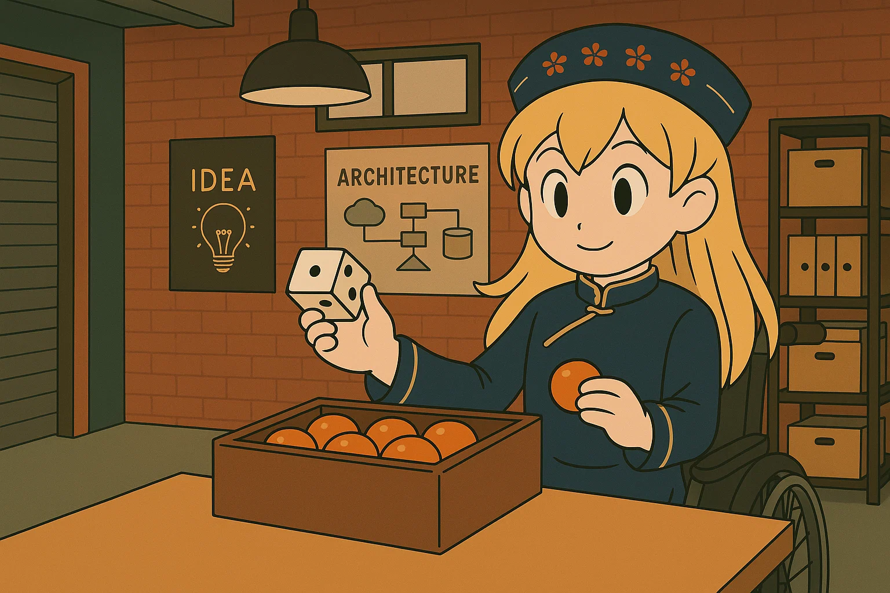
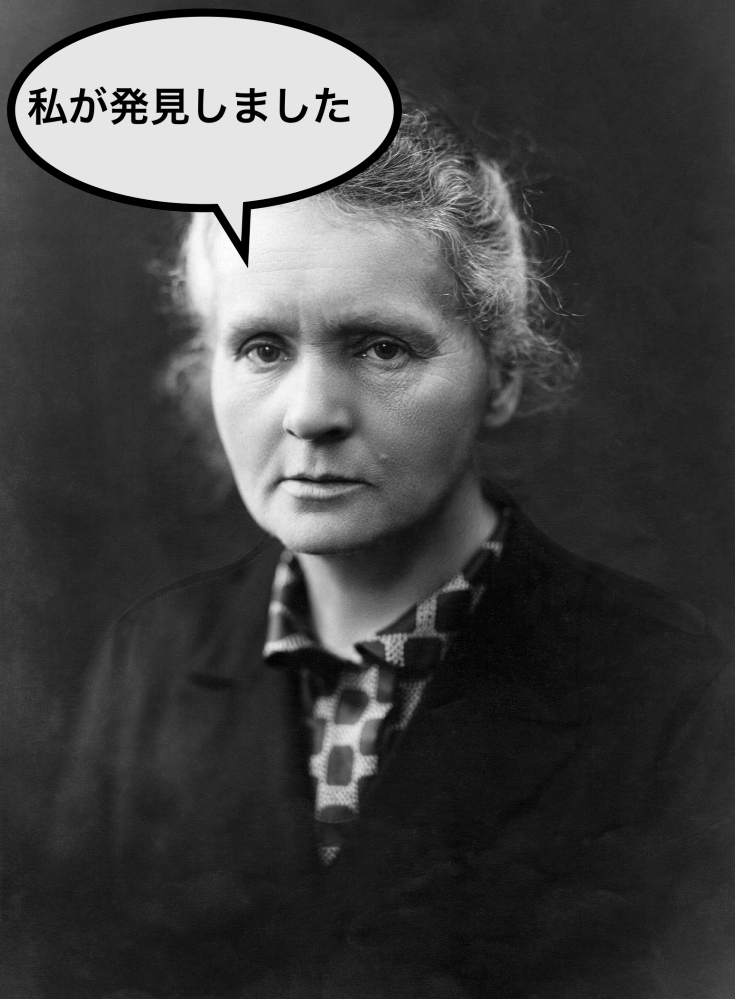
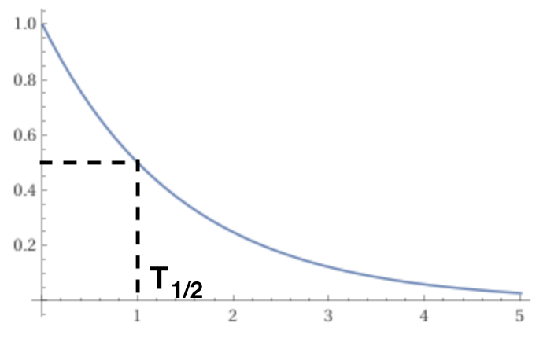
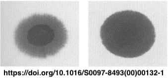
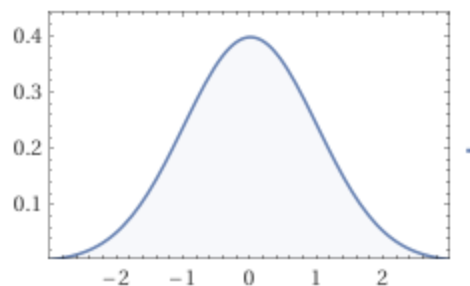

### サイコロで理解する原子核崩壊と拡散現象 #### 〜単純化されたモデルで本質を理解する〜  --- ### 自己紹介 <div class="profile-container"> <div class="profile-left"> * さめ(мег-сск) * 🧑💻 フリーランスのソフトウェアエンジニア * 🧑🎓 社会人学生として通信制大学在学中 * 得意分野: * 📸 コンピュータビジョン (画像認識/点群処理) * 🌍 空間情報処理 (地理情報/リモートセンシング) * ☁️ クラウドインフラ設計/IaC (AWS, GCP) * [GitHub](https://github.com/s-sasaki-earthsea-wizard) * [YouTube](https://www.youtube.com/@SyotaSasaki-EW) * [Speaker Deck](https://speakerdeck.com/syotasasaki593876) </div> <div class="profile-right"> </div> </div> --- ### 今日話すこと <div class="simple-box"> * サイコロを振って出た目によってボールを移動させる単純なゲームを考える * このゲームで原子核崩壊や拡散現象(インクの染みの広がりなど)が再現できることを示す！ * **物理現象をシンプルなモデルで理解することの威力を実感しよう！** </div> --- ## 原子核崩壊のモデル化 --- ### 原子核崩壊のおさらい <div class="simple-box"> * 原子核崩壊は放射性物質が放射線を放出する現象 * 放射線を放出した原子核は安定した原子核に変化する </div>  --- ### 原子核崩壊の速度 <div class="simple-box"> * 放射性同位体の数は指数関数的に減少する: $N(t) = N_0 e^{-\lambda t}$ * 放射性同位体の数が半分になる時間を半減期$T_{1/2}$という * 半減期は放射性同位体によって異なる </div>  --- ### 原子核崩壊をサイコロで再現 <div class="simple-box"> * 箱の中に$N_0$個のボールが入っている * サイコロを振って、偶数ならボールを取り出し、奇数ならそのまま残す * すべてのボールに対してこの操作を行う </div> --- ### 1回の操作でのボールの減少 <div class="simple-box"> * ボールが取り出される確率は: $p = \frac{1}{2}$ * ボールが残る確率は: $1-p = \frac{1}{2}$ </div> 1回の操作を行った後のボールの数は: $$ N_1 = N_0 - N_0 p = N_0 (1-p) $$ --- ### 2回の操作でのボールの減少 <div class="simple-box"> * 1回目の操作で生き残ったボールは: $N_0 (1-p)$ * 同じことが2回目の操作でも起きるので </div> 2回の操作を行った後のボールの数は: $$ N_2 = N_0 (1-p)^2 $$ --- ### 同じ操作を繰り返す <div class="simple-box"> * まったく同じ事の繰り返しなので、$n$回の操作を行った後のボールの数は: </div> $$ N_n = N_0 (1-p)^n $$ --- ### サイコロゲームの一般化 <div class="simple-box"> * この操作を$\Delta t$の間に$\lambda$回の頻度で行うとする * 時刻$t=n \Delta t$とする * $p = \lambda \Delta t$とする * 今までの例は$\lambda = 1$、$\Delta t = 1$の場合と考えてOK </div> * 時刻$t$におけるボールの数は: $$ N(t) = N_0 (1-p)^n = N_0 (1-\lambda \Delta t)^n $$ --- ### 指数の極限 <div class="simple-box"> * 以下の公式を思いだそう $$ \lim_{n \to \infty} \left(1-\dfrac{x}{n}\right)^n = e^{-x} $$ </div> <br> <div class="simple-box"> * この公式を使うと: $$ N(t) = N_0 \left(1-\lambda \Delta t\right)^n = N_0 \left(1-\dfrac{\lambda t}{n}\right)^n $$ </div> --- ### 原子核崩壊の再現 <div class="simple-box"> * $\Delta t \to 0$, $n \to \infty$の極限を取ると、 $$ N(t) = N_0 e^{-\lambda t} $$ </div> <br> <div class="highlight-box"> * これは原子核崩壊の式と一致する！ * サイコロゲームで原子核崩壊を再現できた！ </div> --- ### 半減期 <div class="simple-box"> * 半減期$T_{1/2}$は: $$ N(T_{1/2}) = \frac{N_0}{2} = N_0 e^{-\lambda T_{1/2}} $$ $$ T_{1/2} = \frac{\ln 2}{\lambda} $$ </div> <br> <div class="highlight-box"> * 半減期は「サイコロを振る頻度(の逆数)」と解釈できる！ </div> --- ## 拡散現象のモデル化 --- ### 拡散現象のおさらい <div class="simple-box"> * ガーゼの上に1滴のインクを零したとしよう * インクはガーゼの中を拡散していく * 時間が経つと、インクはガーゼの中に均等に広がる </div>  --- ### 拡散方程式 <div class="simple-box"> * 拡散現象は拡散方程式で記述される * $D$は拡散係数 * $\rho$は濃度 $$ \frac{\partial \rho(t, x)}{\partial t} = D \dfrac{\partial^2 \rho(t, x)}{\partial x^2} $$ * 初期条件は$\rho(0, x) = \delta(x)$として解くと... </div> --- ### 拡散方程式の解 <div class="simple-box"> * 拡散方程式の解はガウス分布になる $$ \rho(t, x) = \frac{1}{\sqrt{4 \pi D t}} \exp\left(-\frac{x^2}{4 D t}\right) $$ </div>  --- ### 拡散をサイコロで再現 <div class="simple-box"> * 時刻$t=0$でボールは原点$x=0$にいる * サイコロの目によってボールを移動させる * 1,2が出たら$+a$だけ移動 (確率$p$) * 3,4が出たら$-a$だけ移動 (確率$p$) * 5,6が出たら移動しない (確率$1-2p$) </div> <img src="assets/images/toy-model.drawio.svg" width="600px"> --- ### 1回の操作でのボールの移動 <div class="simple-box"> * $ t=0$ですべてのボールは原点$x=0$にいる * $\Delta t$の間にすべてのボールに対して1回この操作をする * ボールの密度を$\rho(t, x)$とする * $\Delta t$後のボールの密度は: </div> $$ \rho(t+\Delta t, x) = a\rho(t, x) - 2pa\rho(t, x) $$ $$+ pa\rho(t, x+a) + pa\rho(t, x-a) $$ --- ### ボールの密度のテイラー展開 <div class="simple-box"> * テイラー展開を使うと: </div> * 時間微分に対して $$ \rho(t+\Delta t, x) = a\rho(t, x) + \Delta t \frac{\partial \rho(t, x)}{\partial t} + O(\Delta t^2) $$ * 空間微分に対して $$ \rho(t, x \pm a) = \rho(t, x) \pm a \frac{\partial \rho(t, x)}{\partial x} + \frac{a^2}{2} \frac{\partial^2 \rho(t, x)}{\partial x^2} + O(a^3) $$ --- ### 拡散方程式の導出 <div class="simple-box"> * テイラー展開の式をボールの密度の式に代入: * ここで$D = \frac{pa^2}{2\Delta t}$とした </div> $$ \rho(t, x) = \frac{1}{\sqrt{4 \pi D t}} \exp\left(-\frac{x^2}{4 D t}\right) $$ <div class="highlight-box"> * これは拡散方程式の解と一致する！ * サイコロゲームで拡散現象を再現できた！ </div> --- ### 拡散係数の物理的意味 <div class="simple-box"> * 拡散係数$D$は拡散の速さを表す * 拡散係数が大きいほど拡散が速い * 確率$p$が大きいほど拡散係数は大きくなる * 時間間隔$\Delta t \to 0$の時、拡散係数は$D$に収束するように$a$は動くとした </div> --- ### 補足事項 <div class="simple-box"> * なんで時間微分は1次の項までしか考えないの？ * 空間微分は2次の項まで考えるのに？ * 数学的な厳密性は**伊藤の公式**によって保証されている (今日は省略) </div> --- ### まとめ <div class="simple-box"> * サイコロの目によってボールを移動させるゲームで物理現象を再現！ * 原子核崩壊 * 拡散現象 * シンプルなモデルで本質を理解できる！ * より複雑な物理現象もシンプルなモデルで理解される例がある * イジングモデル、パーコレーション理論... * **あなたも面白いモデルを考えてみませんか？** </div> --- ### LT登壇者の募集 <div class="simple-box"> * 物理学集会ではLT登壇者を募集しています！ * どんなジャンルでもOK！ * 応募がないと主催がまたLTという名目のジャイアンリサイタルを開くことになります... * 興味のある方は物理学集会のDiscordサーバーまで！ </div> <img src="assets/images/qrcode.png" width="200px"> --- ### 告知 <div class="simple-box"> * 次回開催は5月31日を予定しています * LTだけでなく、YouTubeの物理の動画を「この動画をみんなで見たい！」という提案も大歓迎です！ </div>